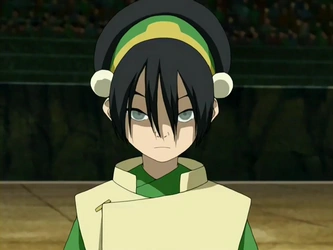

Szereplők
Elemek
Személyiségteszt
Quiz
Kérdőív
Mennyire ismered az Avatart? - Teszteld a tudásod!
Ki volt az első tűzidomár?
a Nap
a Napharcosok
a sárkányok
a Tűz Ura
Ki volt Sokka első barátnője?

Mely találmányok köthetők Sokkához?
Minek nevezték Toph Beifongot?
Vak Bandita
Pici Láb
Bajkeverő Beifong
a Szikla
Hány éves Avatar Aang a sorozat elején?
11
12
13
14
15
112
113
114
115
Hogyan szerezte Zuko a sebhelyét?
Az apjától
A Tűz Urától
Egy Agni Kai során
Tiszteletlen volt egy hadvezérrel szemben
Ki az Avatar csapat tagja?
Melyik állítás HAMIS Aangról, az Avatarról?
Vegetáriánus
Legjobb barátja a YipYip nevű repülő légbölénye
Sokka és Katara véletlenül találta meg
A tűz elemét sikerült a legnehezebben megtanulnia
Hogyan jutottak ki a Forrongó szikla börtönből?
A börtön parancsnok közreműködésével
Áthajóztak a forró vizen egy hütűcellában
Azula léghajójával
Appával, a repülőlénnyel
Melyik víztörzséből származik a történetben szereplő, királyi testvérpár?
Déli
Északi
Mocsári
Egyik sem, nem a Víz törzséből származnak